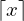

Expression of type Equals¶
from the theory of proveit.numbers.rounding¶
In [1]:
import proveit
# Automation is not needed when building an expression:
proveit.defaults.automation = False # This will speed things up.
proveit.defaults.inline_pngs = False # Makes files smaller.
%load_expr # Load the stored expression as 'stored_expr'
# import Expression classes needed to build the expression
from proveit import x, y
from proveit.logic import Equals
from proveit.numbers import Add, Ceil, Neg, subtract, two
In [2]:
# build up the expression from sub-expressions
expr = Equals(Ceil(Add(subtract(x, y), two)), Add(Ceil(x), Add(Neg(y), two)))
In [3]:
# check that the built expression is the same as the stored expression
assert expr == stored_expr
assert expr._style_id == stored_expr._style_id
print("Passed sanity check: expr matches stored_expr")
In [4]:
# Show the LaTeX representation of the expression for convenience if you need it.
print(stored_expr.latex())
In [5]:
stored_expr.style_options()
In [6]:
# display the expression information
stored_expr.expr_info()
| core type | sub-expressions | expression | |
|---|---|---|---|
| 0 | Operation | operator: 1 operands: 2 | |
| 1 | Literal |  | |
| 2 | ExprTuple | 3, 4 | |
| 3 | Operation | operator: 11 operand: 7 | |
| 4 | Operation | operator: 16 operands: 6 | |
| 5 | ExprTuple | 7 | |
| 6 | ExprTuple | 8, 9 | |
| 7 | Operation | operator: 16 operands: 10 | |
| 8 | Operation | operator: 11 operand: 18 |  |
| 9 | Operation | operator: 16 operands: 13 | |
| 10 | ExprTuple | 14, 15 | |
| 11 | Literal |  | |
| 12 | ExprTuple | 18 |  |
| 13 | ExprTuple | 19, 15 | |
| 14 | Operation | operator: 16 operands: 17 |  |
| 15 | Literal |  | |
| 16 | Literal |  | |
| 17 | ExprTuple | 18, 19 |  |
| 18 | Variable |  | |
| 19 | Operation | operator: 20 operand: 22 |  |
| 20 | Literal |  | |
| 21 | ExprTuple | 22 |  |
| 22 | Variable |  |